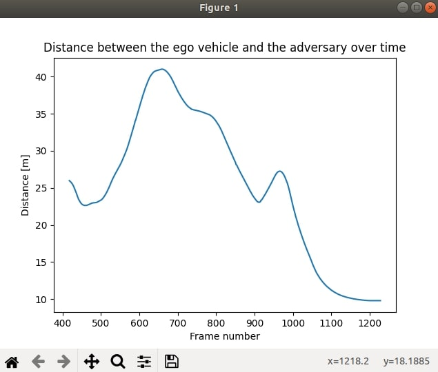

指标模块¶
指标模块依靠 CARLA 记录器 来方便计算和监控任何类型的参数。场景完成后，记录器存储模拟信息。然后，用户可以定义自己的指标，并检查相应的结果，而无需一次又一次地进行模拟。
本节介绍了构成该模块的不同元素的说明、如何创建新指标的分步教程以及查询记录和定义指标的函数的参考。
模块结构¶
与主 ScenarioRunner 模块类似，Metrics 模块使用主脚本 运行，metrics_manager.py其余信息包含在文件夹结构内。这里简单介绍一下主要脚本。
metrics_manager.py— 模块的主脚本。运行此命令以显示一组指标的结果。该脚本具有常用的host和port参数，以及更多用于设置要使用的指标和记录的内容。host(string) – CARLA 模拟运行时的 IP 地址。默认为(127.0.0.1)。port(int) – CARLA 模拟运行的 TCP 端口。默认为2000和2001。metrics— 要使用的指标的路径。log— 包含记录的.log文件的路径（相对于环境变量SCENARIO_RUNNER_ROOT）。criteria(可选) — 具有场景条件的 JSON 文件的路径。
塑造模块的其余元素可以在该srunner/metrics文件夹中找到。这些文件夹已分为三个子文件夹。
-
srunner/metrics/data— 存储有关场景的信息。默认情况下，它有六个文件，它们是示例指标的一部分。 -
srunner/metrics/examples— 包含一些示例指标，以及包含用于创建新指标的基类BaseMetric的指标。basic_metric.py– 包含基类BaseMetric。所有的指标都是从它继承的。criteria_filter.py– 返回包含标准最重要属性的 JSON。distance_between_vehicles.py– 返回两辆车之间的距离。有助于展示如何查询记录。distance_to_lane_center.py– 计算车辆位置与车道中心之间的距离。有助于展示如何访问地图 API 信息。
-
srunner/metrics/tools— 包含两个允许查询记录的关键脚本。metrics_parser.py– 将记录提供的字符串转换为字典。metrics_log.py– 提供多种功能来查询使用metrics_parser.py创建的字典。这些函数是访问场景信息的最简单方法。它们列在本页最后一段的 参考文献 中。
如何使用指标模块¶
1. 记录一个场景¶
指标模块需要记录模拟才能工作。否则，它没有数据来进行指标计算。
使用record 参数。添加应该保存信息的路径。该路径必须相对于环境变量SCENARIO_RUNNER_ROOT。
python scenario_runner.py --scenario <scenario_name> --record <path/to/save/the/recorder/file>
通过记录场景，将在所需路径中创建两个文件。这些log文件criteria稍后将用作metrics_manager.py的参数。
1. CARLA 记录 (.log) — 包含每帧的模拟数据。要了解更多信息，请阅读 记录器文档 。
2. 指标文件 (.json) — 场景标准解析为字典，并存储在 JSON 文件中。字典的键是条件的名称。这些值是每个条件的属性。
!!! 注意 仅解析 JSON 可序列化属性，其余属性将被忽略。
默认情况下，这两个文件均以运行的场景命名。如果场景被命名为example.py，文件将为example.log和example.json。
2. 定义指标¶
现在是创建将用于场景的所需指标的时候了。可能性是无限的，但为了本教程的目的，将使用srunner/metrics/examples/distance_between_vehicles.py中描述的指标作为示例。让我们深入研究一下代码本身。
class DistanceBetweenVehicles(BasicMetric):
"""
指标类 DistanceBetweenVehicles
"""
def _create_metric(self, town_map, log, criteria):
"""
度量的实现。这是一个示例，展示了如何使用通过日志访问的记录器。
"""
# 获取两辆车的ID
ego_id = log.get_ego_vehicle_id()
adv_id = log.get_actor_ids_with_role_name("scenario")[0] # Could have also used its type_id
dist_list = []
frames_list = []
# 获得帧的参与者都活着
start_ego, end_ego = log.get_actor_alive_frames(ego_id)
start_adv, end_adv = log.get_actor_alive_frames(adv_id)
start = max(start_ego, start_adv)
end = min(end_ego, end_adv)
# 获得两者之间的距离
for i in range(start, end):
# 获得变换
ego_location = log.get_actor_transform(ego_id, i).location
adv_location = log.get_actor_transform(adv_id, i).location
# 过滤一些点以获得更好的图形
if adv_location.z < -10:
continue
dist_v = ego_location - adv_location
dist = math.sqrt(dist_v.x * dist_v.x + dist_v.y * dist_v.y + dist_v.z * dist_v.z)
dist_list.append(dist)
frames_list.append(i)
# 使用 matplotlib 展示结果
plt.plot(frames_list, dist_list)
plt.ylabel('Distance [m]')
plt.xlabel('Frame number')
plt.title('Distance between the ego vehicle and the adversary over time')
plt.show()
2.1. 度量的名称. 首先，正如前面提到的，所有指标都是该BasicMetric类的子级。
class DistanceBetweenVehicles(BasicMetric):
2.2. 主方法的名称. 指标只需要一种方法即可运行，_create_metric()方法具有三个参数。
town_map— 场景发生的carla.Map()实例。log—MetricsLog类的实例，具有访问记录器字典所需的所有函数。criteria— 带有标准字典的 JSOn。记录场景时提供的文件，稍后提供给metrics_manager.py。
def _create_metric(self, town_map, log, criteria):
2.3. 实现指标。 代码将根据指标本身而有所不同。
示例指标DistanceBetweenVehicles计算本车与其跟随的汽车（对手）之间的距离。为此，需要id两辆车的配合。这些可以使用get_ego_vehicle_id()和get_actor_ids_with_role_name("scenario")[0]函数从日志中检索。
# 获取两个车辆的 ID
ego_id = log.get_ego_vehicle_id()
adv_id = log.get_actor_ids_with_role_name("scenario")[0] # Could have also used its type_id
它们id用get_actor_alive_frames(actor_id)检索车辆处于活动状态的帧。
# 获取活跃的两个参与者的帧
start_ego, end_ego = log.get_actor_alive_frames(ego_id)
start_adv, end_adv = log.get_actor_alive_frames(adv_id)
start = max(start_ego, start_adv)
end = min(end_ego, end_adv)
现在一切准备就绪，可以循环这些帧，获取它们的变换并计算距离。使用get_actor_transform(actor_id, frame) 获得变换，
dist_list = []
frames_list = []
...
# 获得两者之间的距离
for i in range(start, end):
# 获取变换
ego_location = log.get_actor_transform(ego_id, i).location
adv_location = log.get_actor_transform(adv_id, i).location
# 为了获得更好的图片过滤一些点
if adv_location.z < -10:
continue
dist_v = ego_location - adv_location
dist = math.sqrt(dist_v.x * dist_v.x + dist_v.y * dist_v.y + dist_v.z * dist_v.z)
dist_list.append(dist)
最后，使用 matplotlib 定义运行 metrics_manager.py 时指标的输出。
# 使用 matplotlib 展示结果
plt.plot(frames_list, dist_list)
plt.ylabel('Distance [m]')
plt.xlabel('Frame number')
plt.title('Distance between the ego vehicle and the adversary over time')
plt.show()
3. 运行指标管理器¶
最后，是时候使用从场景中检索的信息以及已定义的指标来返回一些指标信息。让我们使用迄今为止使用的示例指标以及以其命名的示例日志来运行该模块。
python metrics_manager.py --metric srunner/metrics/examples/distance_between_vehicles.py --log srunner/metrics/data/DistanceBetweenVehicles.log
!!! 警告 模拟必须正在运行。否则，模块将无法访问地图API。
这将创建一个新窗口，其中绘制了结果。在输出窗口关闭之前，脚本不会完成。

记录查询参考¶
定义指标时，有关场景的所有信息都通过类MetricsLog（_create_metric()函数中的log参数）访问。该类位于srunner/metrics/tools/metrics_log.py，该引用是其中包含的函数的后续部分。
通用参与者数据¶
-
get_ego_vehicle_id(self)
返回自我车辆的id。- Return — int
-
get_actor_ids_with_role_name(self, role_name)
返回与给定role_name匹配的参与者id列表。- Return — list
- Parameters
role_name(str) — 参与者的role_name。
-
get_actor_ids_with_type_id(self, type_id)
根据 fnmatch 标准，返回与给定匹配的参与者id列表。- Return — list
- Parameters
type_id(str) — 参与者type_id。
-
get_actor_attributes(self, actor_id)
返回包含参与者所有属性的字典。- Return — dict
- Parameters
actor_id(int) — 参与者的id。
-
get_actor_bounding_box(self, actor_id)
返回指定参与者的边界框。- Return — carla.BoundingBox
- Parameters
actor_id(int) — 参与者的id。
-
get_traffic_light_trigger_volume(self, traffic_light_id)
返回指定交通灯的 trigger volume。- Return — carla.BoundingBox
- Parameters
traffic_light_id(int) — 红绿灯的id。
-
get_actor_alive_frames(self, actor_id)
返回一个元组，其中包含参与者活跃的第一帧和最后一帧。请注意，帧从 1 开始，而不是从 0 开始。- Return — tuple
- Parameters
actor_id(int) — 参与者的id。
通用模拟数据¶
-
get_collisions(self,actor_id)
返回具有两个键的字典列表。frame是碰撞的帧编号， 是other_id参与者在该帧发生碰撞的 id 列表。- Return — list
- Parameters
actor_id(int) — 参与者的id。
-
get_total_frame_count(self)
返回一个 int 值，其中包含模拟持续的帧总数。- Return — int
-
get_elapsed_time(self, frame)
返回一个包含特定帧的已用时间的浮点数。- Return — float
- Parameters
frame(int) — 帧号。
-
get_delta_time(self, frame)
返回具有特定帧的增量时间的浮点数。R- Return — float
- Parameters
frame(int) — 帧号。
-
get_platform_time(self, frame)
返回具有特定帧的平台时间的浮点数。- Return — float
- Parameters
frame(int) — 帧号。
参与者加速度¶
-
get_actor_acceleration(self, actor_id, frame)
返回给定帧处参与者的加速度。如果参与者id不存在、参与者没有加速度或者参与者在该帧中不存在，则返回None 。- Return — carla.Vector3D
- Parameters
actor_id(int) — 参与者id。frame(int) — 帧号。
-
get_all_actor_accelerations(self, actor_id, first_frame=None, last_frame=None)
返回包含参与者在帧间隔内的所有加速度的列表。默认情况下，帧间隔包含所有记录。- Return — list(carla.Vector3D)
- Parameters
actor_id(int) — 参与者的id。first_frame(int) — 间隔的初始帧。默认情况下，模拟开始。last_frame(int) — 间隔的最后一帧。默认情况下，模拟结束。
-
get_actor_accelerations_at_frame(self, frame, actor_list=None)
返回一个字典，其中键是帧编号，值是给定帧处参与者的 carla.Vector3D。默认情况下，会考虑所有参与者，但如果传递了actor_list，则仅检查列表中的参与者。- Return — list(carla.Vector3D)
- Parameters
frame(int) — 帧号。actor_list(int) — 参与者id的列表。
参与者角速度¶
-
get_actor_angular_velocity(self, actor_id, frame)
返回给定帧处参与者的角速度。如果参与者 id 不存在、参与者没有角速度或者参与者在该帧中不存在，则返回None 。- Return — carla.Vector3D
- Parameters
actor_id(int) — 参与者的id。frame(int) — 帧的数目。
-
get_all_actor_angular_velocities(self, actor_id, first_frame=None, last_frame=None)
返回包含参与者在帧间隔内的所有角速度的列表。默认情况下，帧间隔包含所有记录。- Return — list(carla.Vector3D)
- Parameters
actor_id(int) — 参与者的id。first_frame(int) — 间隔的初始帧。默认情况下，模拟开始。last_frame(int) — 间隔的最后一帧。默认情况下，模拟结束。
-
get_actor_angular_velocities_at_frame(self, frame, actor_list=None)
返回一个字典，其中键是帧编号，值是给定帧处参与者的carla.Vector3D 。默认情况下，会考虑所有参与者，但如果传递actor_list，则仅检查列表中的参与者。- Return — list(carla.Vector3D)
- Parameters
frame(int) — 帧号。actor_list(int) — 参与者的 ids 列表。
参与者控制¶
-
get_vehicle_control(self, vehicle_id, frame)
返回给定帧处车辆的控制。该manual_gear_shift属性将始终为 False。- Return — carla.VehicleControl
- Parameters
vehicle_id(int) — 车辆的id。frame(int) — 帧号。
-
get_vehicle_physics_control(self, vehicle_id, frame)
返回给定帧处车辆的物理控制。- Return — carla.VehiclePhysicsControl
- Parameters
vehicle_id(int) — 车辆的id。frame(int) — 帧号。
-
get_walker_speed(self, walker_id, frame)
返回给定帧处行人的速度。- Return — carla.Vector3D
- Parameters
walker_id(int) — 行人的id。frame(int) — 帧号。
参与者变换¶
-
get_actor_transform(self, actor_id, frame)
返回给定帧处参与者的变换。如果参与者 id 不存在、参与者没有变换或者参与者在该帧中不存在，则返回None 。- Return — carla.Transform
- Parameters
actor_id(int) — 参与者的id。frame(int) — 帧号。
-
get_all_actor_transforms(self, actor_id, first_frame=None, last_frame=None)
返回一个列表，其中包含参与者在帧间隔内的所有变换。默认情况下，帧间隔包含所有记录。- Return — list(carla.Transform)
- Parameters
actor_id(int) — 参与者的id。first_frame(int) — 间隔的初始帧。默认情况下，模拟开始。last_frame(int) — 间隔的最后一帧。默认情况下，模拟结束。
-
get_actor_transforms_at_frame(self, frame, actor_list=None)
返回一个字典，其中键是帧编号，值是给定帧处参与者的 carla.Transform。默认情况下，会考虑所有参与者，但如果actor_list通过，则仅检查列表中的参与者。- Return — list(carla.Transform)
- Parameters
frame(int) — 帧号。actor_list(int) — 参与者id列表。
参与者速度¶
-
get_actor_velocity(self, actor_id, frame)
返回给定帧处参与者的速度。如果参与者 id 不存在、参与者没有速度或者参与者在该帧中不存在，则返回None 。- Return — carla.Vector3D
- Parameters
actor_id(int) — 参与者的id。frame(int) — 帧号。
-
get_all_actor_velocities(self, actor_id, first_frame=None, last_frame=None)
返回包含参与者在帧间隔内的所有速度的列表。默认情况下，帧间隔包含所有记录。- Return — list(carla.Vector3D)
- Parameters
actor_id(int) — 参与者的id。first_frame(int) — 间隔的初始帧。默认情况下，模拟开始。last_frame(int) — 间隔的最后一帧。默认情况下，模拟结束。
-
get_actor_velocities_at_frame(self, frame, actor_list=None)
返回一个字典，其中键是帧编号，值是给定帧处参与者的 carla.Vector3D。默认情况下，会考虑所有参与者，但如果传递了actor_list，则仅检查列表中的参与者。- Return — list(carla.Vector3D
- Parameters
frame(int) — 帧号。actor_list(int) — 参与者id列表。
场景灯¶
- get_scene_light_state(self, light, vehicle_id, frame)
Returns the state of a scene light for a given frame. The light state group will always be carla.LightGroup.None.- Return — carla.LightState
- Parameters
light_id(int) — 场景灯的id。frame(int) — 帧号。
红绿灯¶
-
get_traffic_light_state(self, traffic_light_id, frame)
返回给定帧的红绿灯状态。- Return — carla.TrafficLightState.
- Parameters
traffic_light_id(int) — 红绿灯的id。frame(int) — 帧号。
-
is_traffic_light_frozen(self, traffic_light_id, frame)
返回交通信号灯是否冻结在给定帧。- Return — bool
- Parameters
traffic_light_id(int) — 交通灯的id。frame(int) — 帧号。
-
get_traffic_light_elapsed_time(self, traffic_light_id, frame)
返回给定帧处交通灯的经过时间。- Return — float
- Parameters
traffic_light_id(int) — 交通灯的id。frame(int) — 帧号。
-
get_traffic_light_state_time(self, traffic_light_id, state, frame)
返回给定帧处交通灯特定状态的最长时间。- Return — float
- Parameters
traffic_light_id(int) —idof the traffic light.state(carla.TrafficLightState) — 参与者的id。frame(int) — 帧号。
车灯¶
-
get_vehicle_lights(self, vehicle_id, frame)
返回一个列表，其中包含给定帧处特定车辆的活动灯。- Return — list(carla.VehicleLightState)
- Parameters
vehicle_id(int) — 车辆的id。frame(int) — 帧号。
-
is_vehicle_light_active(self, light, vehicle_id, frame)
检查给定车辆灯在特定帧是否处于活动状态。- Return — bool
- Parameters
light(carla.VehicleLightState) — 与车辆进行比较的灯光状态。vehicle_id(int) — 车辆的id。frame(int) — 帧号。